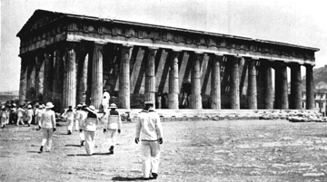

|
T |
he best-known version in English of the legend of Theseus, from ancient Greek Mythology, is to be found in �The Heroes� by Charles Kingsley.
Aegeus, King of Athens, was the father of Theseus and his mother was Aethra, daughter of Pittheus, King of Troezen. Aegeus deserted Aethra when Theseus was very young and the boy was brought up in ignorance of his birthright, in the court of King Pittheus. Each year on his birthday the boy would be sent by his mother to a large rock, which he was told to attempt to lift. On his 18th birthday Theseus succeeded and under the rock found a pair of sandals and a sword which, his mother revealed, were a gift from his father: Theseus must take them to Athens and identify himself to King Aegeus.
On the road to Athens, Theseus' courage and determination were tested to the utmost. The way ran through the territories of hostile kings and was infested with robbers. Overcoming all difficulties and dangers he at last reached the court of King Aegeus, where his father recognised him by the sword and sandals he brought into the royal presence.
Surviving an attempt to poison him during his first hours in the court Theseus settled down to the life of a prince. Not many months had passed, however, before a demand came from King Minos of Crete for the tribute of seven young men and seven maidens, extorted annually from Athens for the murder of King Minos' son there during the Panathenic games. These victims were offered by Minos to be devoured by the Minotaur, a fabulous creature having the body of a man, the head of a bull and lion's teeth, which dwelt in a wonderfully constructed maze known as the Labyrinth.
Theseus volunteered to be one of the seven young men. On arrival at Crete he met and fell in love with Ariadne, the beautiful daughter of King Minos. Ariadne provided Theseus secretly with a sword and the means of finding his way out of the Labyrinth. Theseus penetrated the maze and finding the Minotaur at the centre of it plunged the sword into the monster's heart and killed him. (This is the incident depicted in the badge of H.M.S Theseus).
On their escape from Crete, Ariadne accompanied Theseus and his companions, but deserted him when the ship called at Naxos, an island in the Dodecannese.
When the vessel came in sight of Athens, King Aegeus, supposing his son's mission to have failed, threw himself into the sea - now named the Aegean Sea after him - Theseus became King of Athens and governed wisely and well, creating a period of prosperity throughout the land. Many stories of his adventures are to be found in Greek mythology: he met an unfortunate end when Lycomedes, King of Scyros, jealous of Theseus' fame, murdered him by pushing him over a precipice.
In 469 B.C., what purported to be the bones of this legendary figure were recovered, brought to Athens and buried in great magnificence. Statues and a temple - the Theseum, a portion of which still stands - were created in his honour, and festivals, games and a national day, October 21st, were initiated to commemorate him.

British sailors visiting the remains of the Temple of Theseus at Athens